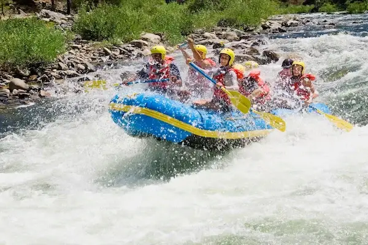

Welcome to our trips at UNICON White water rafting company
A Trip on Ikpoba River Benin City Edo State Nigeria:

A Trip on River Etiop in Delta State Nigeria:
A Trip in the Niger River in Nigeria:

A Trip in the Benue River:

Memorable and affordable trips awaits you!
To take advantage of our current existing discounted promotional offer, click to apply
| Trips | Distance | Difficulty | Age in years |
|---|---|---|---|
| Level-up | 5km | * | 18 - 60 |
| Classic | 10km | ** | 22 - 55 |
| Prefessional | 20km | *** | 25 - 50 |
| Premium | 25km | **** | 25 - 50 |
| Presidential | 35km | ***** | 30 - 47 |